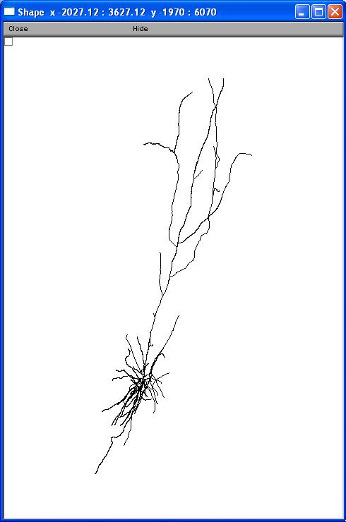
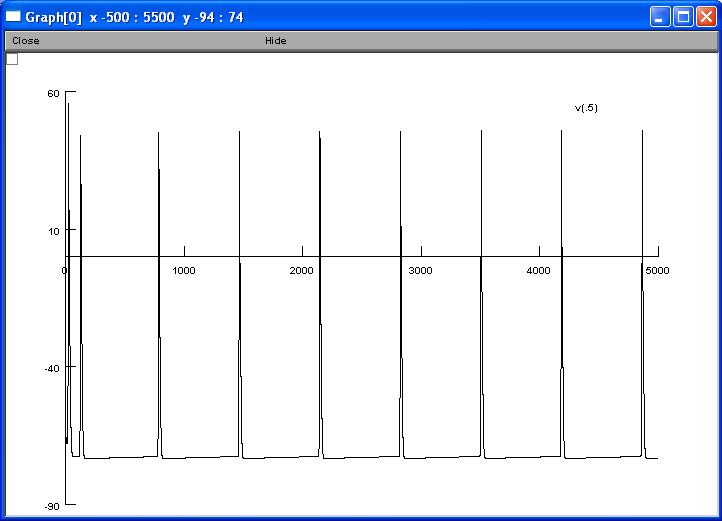

This is the readme for the models associated with the paper Lee, Jin (2007) "Fast Rhythmic Bursting Cells: The Horizontal Fiber System in the Cat`s Primary Visual Cortex" Penn McNair Research Journal: Vol. 1: Iss. 1, Article 1 These NEURON models (NEURON is available from http://www.neuron.yale.edu) can be autolaunched from ModelDB to immediately start a simulation or download and extract the archive, compile the mod files and then under unix/linux: ----------- type nrngui mosinit.hoc at the command line mac os X: --------- drag and drop the mosinit.hoc file onto the nrngui icon mswin: ------ double click the mosinit.hoc file in the extracted folder after the simulation starts: ---------------------------- First select a cell from the menu, for example FRB. The morphologies of this model match those shown in figure 3C of the paper.  Press the "Init & Run" button. When the simulation is complete you should see a figure like:  February 22nd, 2010: These files were updated to include data files so that the additional FRB_12_19 and FRB_12_21 simulations can be run.